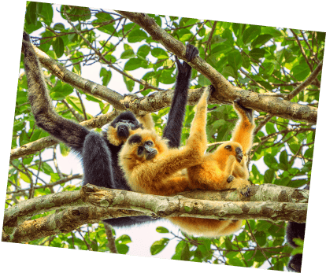

Got 2 minutes?
Swipe for some surprising facts (and how you're helping).
Every 100៛ from your Grab ride or order goes towards projects that
help Mother Nature.
Here's what happens when you opt in to our Green Programme:
Turn your small change into big changes for the planet
Sadly, deforestation is ending this jungle echo. Your support can
help the Wildlife Conservation Society protect these gibbons and
more animals at the
Keo Seima Wildlife Sanctuary.
And it's not just about animals. Protecting this forest also
helps store millions of tonnes of CO₂.
A win for wildlife and the world.
Did you know?
Yellow-cheeked gibbons sing songs that can be heard up to 1km away


©Filip Agoo/Everland
Over 80 threatened species live
here, including black-shanked
douc langurs and Asian elephants.
Many rural communities in Cambodia still burn wood to make water
safe. Your support for
Hydrologic's Ceramic Water Filter Project
helps change that.
It’s a simple solution. But it’s already saved around
40,000 tonnes of wood
and cut
around 88,000 tonnes of CO₂ emissions
each year, on average.
Did you know?
Boiling water literally burns the planet

They provide affordable filters to
give about 30L of clean water a
day. No boiling needed!
Can you guess how many trees have been contributed so far?
Goes to show how small change can grow into something big, huh? Tap
here to opt in to
Green Programme,
if you haven't yet.
Quick quiz.
Since 2021, Grab users like you have been championing forest
conservation across Southeast Asia.
1.2 million trees

Source:
New England Primate Conservancy